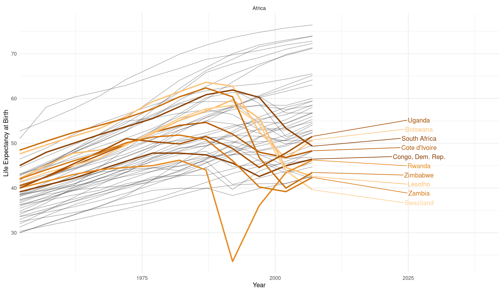

4 Functional Programming
… which is all about functions, bringing the whole tidyverse together and exploring advanced dplyr data wrangling techniques.
4.1 Todays goal
My goal today is to bring together everything we learned so far and solidify our understanding of wrangling data in the tidyverse. If all goes according to plan, we will then have more mental capacity freed up for the statistics starting next week. And our understanding of data will hopefully enable us to experiment and play with statistical concepts without getting stuck too much on data wrangling. This also means that today’s lecture might be the most challenging so far, because everything learned up until now will – in one way or another – be relevant.
But first, we load the libraries for today as usual. Note, that I am cheating a bit here by loading the gapminder package as well. Even though we will be reading in actual gapminder dataset again from files today, having access to the vector of country colors is nice to have.
In the lecture I also quickly go over some of the most important resources so far. This mostly concerns the pure R resources, I will cover the resources for statistics and some of the maths involved in the next couple of lectures.
As you might be able to tell, mental models are one of my favorite topics. We are starting today with a powerful mental model: iteration.
4.2 Iteration
Iteration is the basic idea of doing one thing multiple times. This is an area where computers shine, so in this chapter we will learn to fully utilize the power at our fingertips.
As an example, we will be reading in multiple similar files. Remember the gapminder dataset? Well, we are working with it again, but this time, our collaborator sent us one csv-file for each continent. You can find them in the data/04/ folder.
We already know how to read in one csv-file:
read_csv("./data/04/Africa.csv")4.2.1 The Imperative Programming Approach
The first solution to our problem is not my favorite one, but I want to show it anyway for the sake of completeness. In general, in Functional Programming, we tell the computer what we want, while in Imperative Programming, we tell the computer what steps to do. So here, we tell R what steps to perform. First, we get a vector of file-path’s with the fs package, which stands for file system. dir_ls means directory list, so we get the contents of a directory. We then create a list to store the dataframes that we are going to read in. We already define the length of the list because making a data structure longer is not R’s strong suit when it doesn’t know how much space to reserve for it. We then iterate over the numbers from 1 to the length of our paths. At each iteration we get the is path, read it and store it in our results list at position i. Finally we bind the list into one dataframe:
paths <- fs::dir_ls("./data/04/")
result <- vector(mode = "list", length = length(paths))
for (i in 1:length(paths)) {
result[[i]] <- read_csv(paths[i])
}
bind_rows(result)# A tibble: 1,704 × 5
country year lifeExp pop gdpPercap
<chr> <dbl> <dbl> <dbl> <dbl>
1 Algeria 1952 43.1 9279525 2449.
2 Algeria 1957 45.7 10270856 3014.
3 Algeria 1962 48.3 11000948 2551.
4 Algeria 1967 51.4 12760499 3247.
5 Algeria 1972 54.5 14760787 4183.
6 Algeria 1977 58.0 17152804 4910.
7 Algeria 1982 61.4 20033753 5745.
8 Algeria 1987 65.8 23254956 5681.
9 Algeria 1992 67.7 26298373 5023.
10 Algeria 1997 69.2 29072015 4797.
# … with 1,694 more rowsIn doing this we have lost the information about the Continent, which was in the file name, but before dwelling on this for too long, let’s leave the more convoluted and manual way behind and explore a, I dare say, more elegant approach.
4.2.2 The Functional Programming Approach
“Of course someone has to write for-loops. It doesn’t have to be you.” — Jenny Bryan
We have a function (read_csv) that takes a file path and returns (spits out) the data. In the Functional Programming style, the next idea is to now have a function, that takes two things: vector (atomic or list) and a function. And it feeds the individual elements of the vector to the function, one after another. In mathematics, the relation between a set of inputs and a set of outputs is called a map, which is where the name of the following family of functions comes from. In the tidyverse, these functional programming concepts live in the purrr package.
Iterating Explicitly with maps:
First, we create the vector of things that we want to iterate over, the things that will be fed into our function one after the other:
paths <- fs::dir_ls("./data/04/")Then we map the read_csv function over our vector and bind the resulting list of dataframes into one dataframe:
The operation of mapping over a vector and combining the resulting list into one dataframe is actually so common that there is a variant of map that does this step automatically:
map_df(paths, read_csv, .id = "continent")This distills everything our initial for-loop did into just one line of code. Using the .id argument we can save the name of the file path to a column in our dataset. This allows us to extract the continent from it:
gapminder <- map_df(paths, read_csv, .id = "continent") %>%
mutate(continent = str_extract(continent, "(?<=/)\\w+(?=\\.csv)"))
head(gapminder)# A tibble: 6 × 6
continent country year lifeExp pop gdpPercap
<chr> <chr> <dbl> <dbl> <dbl> <dbl>
1 Africa Algeria 1952 43.1 9279525 2449.
2 Africa Algeria 1957 45.7 10270856 3014.
3 Africa Algeria 1962 48.3 11000948 2551.
4 Africa Algeria 1967 51.4 12760499 3247.
5 Africa Algeria 1972 54.5 14760787 4183.
6 Africa Algeria 1977 58.0 17152804 4910.My way of extracting the continent from the file path seems magical at first, and I still refer to the cheat sheet of the stringr package a lot when I am having to deal with text:
Iterating implicitly with vectorized functions:
We had our first encounter with iteration in a very implicit form. When we use R’s basic math operators, the computer is iterating behind the scenes. Take this expression:
1:3 + 1:3[1] 2 4 6This operation is vectorized. Without us having to tell R to do so, R will add the first element of the first vector to the first element of the second vector and so forth.
Notice, how it looks like the operation happens all at the same time. But in reality, this is not what happens. The computer is just really fast at adding numbers, one after the other.
The mathematical operations in R call another programming language that does the actual addition. This other programming language is closer to the way computers think, making it less fun to write for us humans, but also faster because the instructions are easier to translate into actions for our computer processor.
Remember, we only have to build our own iteration (e.g. with a map function), when we find a task that we want to apply to multiple things, and that is not already vectorized. And as it turns out, the fs and readr packages play very well together, because readr can also just take a vector of file paths and does the combining automatically!
read_csv(paths, id = "continent")# A tibble: 1,704 × 6
continent country year lifeExp pop gdpPercap
<chr> <chr> <dbl> <dbl> <dbl> <dbl>
1 ./data/04/Africa.csv Algeria 1952 43.1 9279525 2449.
2 ./data/04/Africa.csv Algeria 1957 45.7 10270856 3014.
3 ./data/04/Africa.csv Algeria 1962 48.3 11000948 2551.
4 ./data/04/Africa.csv Algeria 1967 51.4 12760499 3247.
5 ./data/04/Africa.csv Algeria 1972 54.5 14760787 4183.
6 ./data/04/Africa.csv Algeria 1977 58.0 17152804 4910.
7 ./data/04/Africa.csv Algeria 1982 61.4 20033753 5745.
8 ./data/04/Africa.csv Algeria 1987 65.8 23254956 5681.
9 ./data/04/Africa.csv Algeria 1992 67.7 26298373 5023.
10 ./data/04/Africa.csv Algeria 1997 69.2 29072015 4797.
# … with 1,694 more rowsWhenever you encounter a new problem, ask yourself these questions:
- Is there a function that already does that?
- Is it already vectorized?
- If not, is there a function that solves my problem for one instance?
- Can I map it over many things?
The purrr package contains various variants of the map function.
-
mapitself will always return a list. -
map_chralways returns an atomic character (=text) vector. -
map_dblalways returns numbers (dbl = double precision). -
map_lglalways returns logical (yes or no, TRUE / FALSE) vectors. -
map_dfralways returns a dataframe.
# map_The for-loop-version had a lot more code, especially boilerplate, code that is just there to make the construct work and doesn’t convey our intentions with the code. Furthermore, the loop focuses the object that is iterated over (the file paths), while the map-version focuses on what is happening (the function, read_csv). But the loop still works. If you can’t think of a way to solve a problem with a map function, it is absolutely OK to use for-loops.
4.3 “If you copy and paste the same code more than three times, write a function.”
Writing our own functions can be very helpful for making our code more readable. It allows us to separate certain steps of your analysis from the rest, look at them in isolation to test and validate them, and also allows us to give them reasonable names.
It also allows us to re-use function across projects! Let’s imagine we have some experiment where the read-out of the machine is always in a certain format and needs some cleaning up. If we turn this into a function, e.g. like this:
We can put this function in a file (in my case R/my_functions) and source it, for example in multiple analysis Rmarkdown documents. The source function is nothing special, it just runs the R code in a file. And when we define functions in this file, those functions are then available to us:
source("R/my_functions.R")
read_experiment_data(4)Note: This example function only make sense to use with 4 as the input, as the data for the other days is of course different, but I hope you get the gist.
I like to store my regular R files (as opposed to Rmd files) in a folder of my project called R. This makes it already look like an R package, in case I decide later on that the functions could be helpful for others as well or I want to share them more easily with colleagues. You can read more about creating your own R packages here (Wickham 2015).
4.4 Implicit iteration with dplyr: build many models
dplyrs idea of grouping allows us to express many ideas that are implicitly also iterations.
Let us start by looking at just one country at first:
We can plot the life expectancy over time with ggplot and add a linear model to our plot with geom_smooth using method = "lm".
algeria %>%
ggplot(aes(year, lifeExp)) +
geom_smooth(method = "lm") +
geom_point()However, while geom_smooth allows us to easily add smoothing lines or linear trends to our plot, it does not give us any information about the actual model. In order to do that we need to fit it ourselves with the lm function:
model <- lm(lifeExp ~ year, data = algeria)The ~ symbol defines a formula, you can read it as: “lifeExp depending on year”. The data argument tells R where to look for the variables lifeExp and year, namely in our algeria tibble.
summary(model)
Call:
lm(formula = lifeExp ~ year, data = algeria)
Residuals:
Min 1Q Median 3Q Max
-2.3844 -0.5935 -0.2703 0.5339 2.4992
Coefficients:
Estimate Std. Error t value Pr(>|t|)
(Intercept) -1.068e+03 4.380e+01 -24.38 3.07e-10 ***
year 5.693e-01 2.213e-02 25.73 1.81e-10 ***
---
Signif. codes: 0 '***' 0.001 '**' 0.01 '*' 0.05 '.' 0.1 ' ' 1
Residual standard error: 1.323 on 10 degrees of freedom
Multiple R-squared: 0.9851, Adjusted R-squared: 0.9836
F-statistic: 661.9 on 1 and 10 DF, p-value: 1.808e-10That is a lot of information about our model! The broom package provides some functions for a cleaner and more specialized output:
broom::tidy(model)# A tibble: 2 × 5
term estimate std.error statistic p.value
<chr> <dbl> <dbl> <dbl> <dbl>
1 (Intercept) -1068. 43.8 -24.4 3.07e-10
2 year 0.569 0.0221 25.7 1.81e-10Every 1 year the life expectancy in Algeria went up by about half a year. Of course, this is only valid in the limited linear regime of our datapoints. We can’t extrapolate this indefinitely. After all, the intercept tells us that there would be a negative life expectancy at year 0.
But given the data that we have, how good does a line fit here?
broom::glance(model)# A tibble: 1 × 12
r.squared adj.r.squared sigma statistic p.value df logLik AIC BIC
<dbl> <dbl> <dbl> <dbl> <dbl> <dbl> <dbl> <dbl> <dbl>
1 0.985 0.984 1.32 662. 1.81e-10 1 -19.3 44.6 46.0
# … with 3 more variables: deviance <dbl>, df.residual <int>, nobs <int>R2 takes on values between 0 and 1, with 1 being a perfectly straight line connecting all the points and 0 for the points being all over the place. So 0.985 is a pretty good fit!
Using the dollar syntax, we get pull one column from a tibble, so we can write a function that, given a model, returns the R2
get_r_squared <- function(model) {
broom::glance(model)$r.squared
}And now come the dplyr magic! If we group by country (and continent for good measuere just so that we don’t loose that column when summarizing), we can calculate a linear model for every country!
Note two things: Firstly, we don’t use the data argument of lm here because the tidyverse functions already know where to look for lifeExp and year and they do so respecting the groups. So within each group (i.e. for each country), lifeExp will only contain the life expectancy for that country, not the life expectancy for all countries. Secondly, we wrap this part in list because we have to create a list column here (models don’t fit into an atomic vector). Otherwise, dplyr will complain.
In the second step we calculate the rsqured value for each model by mapping the function we created above over all models. We use the _dbl variant here because we want the values as an atomic vector of numbers, not as a list.
all_models <- gapminder %>%
group_by(country, continent) %>%
summarise(
model = list(lm(lifeExp ~ year)),
rsquared = map_dbl(model, get_r_squared)
)
head(all_models)# A tibble: 6 × 4
# Groups: country [6]
country continent model rsquared
<chr> <chr> <list> <dbl>
1 Afghanistan Asia <lm> 0.948
2 Albania Europe <lm> 0.911
3 Algeria Africa <lm> 0.985
4 Angola Africa <lm> 0.888
5 Argentina Americas <lm> 0.996
6 Australia Oceania <lm> 0.980Finally, we can add our calculated R2 values as a column to the original gapminder dataset so that we can use it in the following visualization.
Here, we highlight the irregularities (less linear countries) by making the transparency (= alpha value) depend on the R2 value.
gapminder %>%
ggplot(aes(year, lifeExp, color = country, alpha = 1/rsquared)) +
geom_line() +
guides(color = "none", alpha = "none") +
scale_color_manual(values = country_colors) +
facet_wrap(~continent, scales = "free") +
theme_minimal()We can highlight one continent by filtering and use the ggrepel package to allow for more flexible labels. Furthermore check out the source document of this lecture and the video of the lecture to find out how you can add a figure caption and control the width and height of the plot via knitr chunk options. I also showcase a new way of writing chunk options in the latest version of the knitr package that is especially suited for longer captions.
gapminder %>%
filter(continent == "Africa") %>%
ggplot(aes(year, lifeExp, color = country, group = country)) +
geom_line(color = "black", alpha = 0.3) +
geom_line(data = filter(gapminder, rsquared <= 0.4), size = 1.1) +
ggrepel::geom_text_repel(aes(label = country),
data = filter(gapminder, rsquared <= 0.4,
year == max(year)),
nudge_x = 20,
direction = "y"
) +
guides(color = "none", alpha = "none") +
scale_color_manual(values = country_colors) +
facet_wrap(~continent, scales = "free") +
labs(x = "Year", y = "Life Expectancy at Birth") +
theme_minimal() +
scale_x_continuous(expand = expansion(mult = c(0, 0.2)))
The downward slope of our highlighted countries starting in the 1990s is a result of the ravaging AIDS pandemic. The prominent dips in two of the curves, orange for Rwanda and Cambodia in gray, are the direct consequences of genocides. These dire realities can in no way be summarized in just a couple of colorful lines. I am also in no way qualified to lecture on these topics. A good friend of mine, Timothy Williams, however is a researcher and teacher in the field of conflict and violence with a focus on genocides. He did field work in Cambodia and Rwanda and his book “The Complexity of Evil. Perpetration and Genocide” was published here on December 18 2020 (Williams, n.d.).
4.5 Exercises
I want to get you playing around with data, so keep in mind that the solutions for this exercise are not set in stone. There is often more than one viable way of graphing the same dataset and we will use the Office Hour to talk about the advantages and disadvantages of approaches that you came up with.
4.5.1 Roman emperors
The first exercise uses a dataset about roman emperors from the tidytuesday project (link). You can import it with:
emperors <- readr::read_csv("https://raw.githubusercontent.com/rfordatascience/tidytuesday/master/data/2019/2019-08-13/emperors.csv")There is a slight error in the data because some of the dates are actually in BC time. In order to fix this we will be using the lubridate package, which is installed with the tidyverse, but not automatically loaded. For your convenience here is a function that you can use to fix the dataset:
Here are the questions to answer. Decide for yourself, if a particular question is best answered using a visualization, a table, a simple sentence or a combination of the three.
- What was the most popular way to rise to power?
- I what are the most common causes of death among roman emperors? What (or who) killed them?
- Which dynasty was the most successful?
- Firstly, how often did each dynasty reign?
- Secondly, how long where the reigns?
- Which dynasty would you rather be a part of, if your goal is to live the longest?
4.5.2 Dairy Products in the US
Another dataset (link) concerns dairy product consumption per person in the US across a number of years. Load it with:
dairy <- readr::read_csv("https://raw.githubusercontent.com/rfordatascience/tidytuesday/master/data/2019/2019-01-29/milk_products_facts.csv")- All masses are given in lbs (pounds), can you convert them to kg?
- Which products lost their customer base over time, which ones won? Which products have the greatest absolute change in production when estimated with a straight line?
Above all, have some fun! If you make interesting findings along the way, go ahead and produce plots to highlight it.